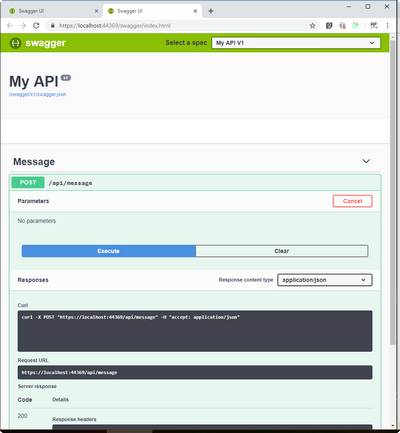
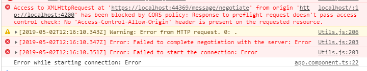

Radiofisik
my knowledge base
my knowledge base
Создадим новый проект Visual Studio через команду dotnet new набрав ее без параметров получим список возможных шаблонов. Будем использовать самый простой.
dotnet new web
Установим nuget пакеты
dotnet add package Microsoft.AspNetCore.SignalR
В Startup.cs зарегистрируем сервис
public void ConfigureServices(IServiceCollection services)
{
services.AddSignalR();
}
Создадим класс хаба
public class MessageHub: Hub
{
public Task Send(string message)
{
return Clients.All.SendAsync("Send", message);
}
}
Зарегистрируем SignalR middleware
public void Configure(IApplicationBuilder app, IHostingEnvironment env)
{
app.UseSignalR(routes => { routes.MapHub<MessageHub>("/message"); });
}
Для целей тестирования добавим контроллер с методом который будет принимать сообщения и слать через SignalR. Для этого зарегистрируем mvc и добавим класс контроллера
services.AddMvc(); // в ConfigureServices
app.UseMvc(); // в Configure
// контроллер
[Route("api/message")]
public class MessageController: Controller
{
[HttpPost]
public IActionResult Post()
{
return Ok();
}
}
изменим контроллер чтобы он мог отправлять сообщения клиенту
[Route("api/message")]
public class MessageController: Controller
{
private readonly IHubContext<MessageHub> _hubContext;
public MessageController(IHubContext<MessageHub> hubContext)
{
_hubContext = hubContext;
}
[HttpPost]
public IActionResult Post()
{
_hubContext.Clients.All.SendCoreAsync("send", new[] {"hello from server"});
return Ok();
}
}
Для удобства запуска метода контроллера добавим swagger через Swashbuckle
dotnet add package Swashbuckle.AspNetCore
services.AddSwaggerGen(c =>
{
c.SwaggerDoc("v1", new Info { Title = "My API", Version = "v1" });
});
// Enable middleware to serve generated Swagger as a JSON endpoint.
app.UseSwagger();
// Enable middleware to serve swagger-ui (HTML, JS, CSS, etc.),
// specifying the Swagger JSON endpoint.
app.UseSwaggerUI(c =>
{
c.SwaggerEndpoint("/swagger/v1/swagger.json", "My API V1");
});
После чего будут доступны ` http://localhost:

Создадим проект с помощью Angular CLI
ng new signalrclient
cd .\signalrclient\
npm install
npm install @aspnet/signalr --save
подредактируем app.component.ts чтобы логировать в консоль получаемые сообщения
import { Component, OnInit } from '@angular/core';
import * as signalR from '@aspnet/signalr';
@Component({
selector: 'app-root',
templateUrl: './app.component.html',
styleUrls: ['./app.component.scss']
})
export class AppComponent implements OnInit {
title = 'signalrclient';
ngOnInit(): void {
const connection = new signalR.HubConnectionBuilder()
.withUrl('https://localhost:44369/message')
.build();
connection.on('send', data => {
console.log(data);
});
connection.start()
.then(() => connection.invoke('send', 'hi'))
.catch(err => console.log('Error while starting connection: ' + err));
}
}
Запустим проект через ng serve После запуска откроем http://localhost:4200/ в консоле увидим ошибку типичную для CORS. Возникает она потому что по умолчанию кроссдоменный запрос запрещен.

services.AddCors(options =>
{
options.AddPolicy("CorsPolicy",
builder => builder.WithOrigins("http://localhost:4200")
.AllowAnyMethod()
.AllowAnyHeader()
.AllowCredentials());
});
добавим midleware которое добавить заголовки cors
app.UseCors("CorsPolhttps://www.youtube.com/watch?v=R3UJjSAH6bMicy");

Получившийся проект можно загрузить по ссылке https://github.com/Radiofisik/SignalRAngular.git
При написании использованы материалы: